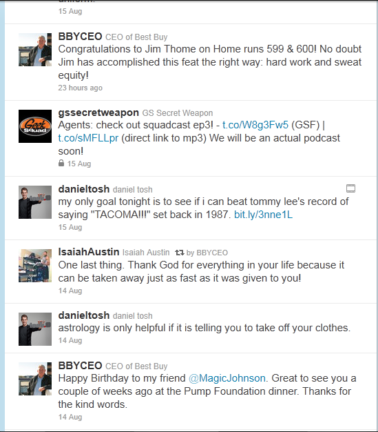

Welcome User
My Account
Logout
Pending
Messages
This is the Tweet Writer home page, this H1 will not show outside of this demo HTML5.
Company's Twitter feed here

Start Date
End Date
By User
By Category
Full Custom Twitter feed here